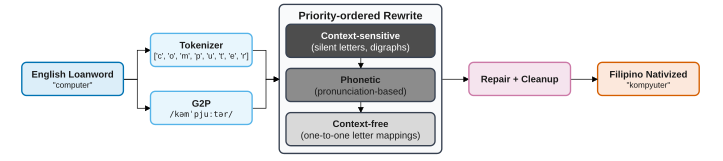
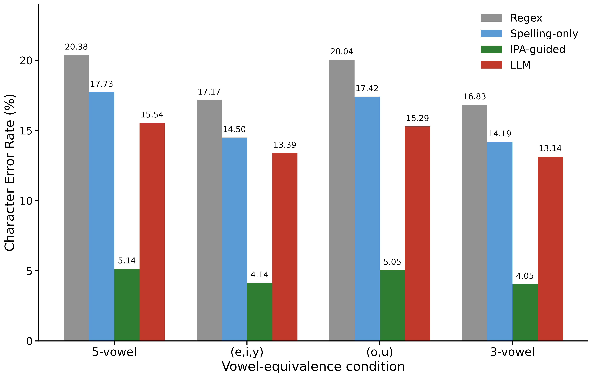

Orthographic Nativization as Rule-Based Rewrite Cascades
A linguistically grounded, priority-ordered rewrite cascade for adapting English loanwords into standardized Filipino orthography without parallel training corpora.
College of Computer Studies, De La Salle University, Manila, Philippines
MangoCats Research Group • zhean_robby_ganituen@dlsu.edu.ph
The Orthographic Nativization Challenge
Generating standardized written forms of loanwords in low-resource recipient languages.
Orthographic nativization—generating standardized written forms of loanwords in a recipient language—remains understudied computationally despite its importance for text normalization, spell-checking, and multilingual NLP. When English loanwords enter Filipino, they undergo substantial phonotactic and graphemic changes prescribed by the official Komisyon sa Wikang Filipino (KWF) guidelines (e.g., computer → kompyuter, straight → istreyt, schedule → iskedyul).
Unlike abstract phonological adaptation, orthographic nativization requires producing concrete character sequences obeying the target language's orthography. TagaBaybay operationalizes prescriptive linguistic rules and phonological descriptions into a deterministic four-stage rewrite cascade, eliminating the need for expensive parallel training corpora.
Linguistic Grounding
Directly formalizes the codified prescriptive manual by Virgilio Almario (KWF 2014) alongside phonological descriptions of Philippine English and Filipino.
Zero Parallel Corpora
Deployed with zero training data requirements. Deterministic execution produces zero hallucinations, sub-millisecond throughput, and fully interpretable rewrite steps.
5.14% Character Error Rate
Evaluated on 2,319 gold-standard pairs, outperforming both regular expressions (20.38% CER) and zero-shot LLMs with identical rules (15.54% CER).
Four-Stage Rewrite Pipeline
An English loanword passes through tokenization, context-sensitive cascades, phonetic lookup, and normalization.

Figure 1: Orthographic nativization pipeline. An English loanword is tokenized into multigraphs, passed through priority-ordered rewrite rules and G2P phonetic resolution, followed by repair and cleanup.
Rewrite Cascade in Action
Select an English loanword below to inspect its grapheme tokenization and priority-ordered rewrite cascade.
Benchmark Results on 2,319 Loanwords
Evaluated against a newly constructed gold standard of English–Filipino loanword pairs under multiple vowel-equivalence conditions.
| Method / Model | Paradigm | 5-Vowel CER | 3-Vowel CER | Notes / Behavior |
|---|---|---|---|---|
| TagaBaybay (Proposed) | Rule-Based Rewrite Cascade + G2P | 5.14% | 4.05% | Highest accuracy; deterministic & interpretable |
| Spelling-Only Ablation | Rules without G2P Resolution | 17.73% | 16.02% | Fails on ambiguous vowels and schwa reductions |
| Large Language Model (LLM) | Zero-Shot Prompting (Rules in Prompt) | 15.54% | 14.10% | Cannot reliably execute character-level constraints |
| Regular Expressions Baseline | Unordered Pattern Substitutions | 20.38% | 19.12% | Suffers from rule collisions & context bleed |

Figure 2: Overall CER (%) under four vowel-equivalence conditions from the paper.
Primary Error Analysis Takeaways
-
1.
Unstressed Schwa Ambiguity: English schwa /ə/ lacks an exact Filipino counterpart, leading to auditory substitutions between e, i, and a.
-
2.
Vowel Hiatus Glide Insertion: Glides /w/ and /j/ break vowel hiatus (e.g. tiara → tiyara).
-
3.
Upstream G2P Quality: 40 character edits traced directly to pronunciation lexicons on long pharmaceutical terms.
Project Members
Researchers from the MangoCats Research Group at De La Salle University.
Faculty Adviser: Nathaniel Oco
We would also like to thank the following people for their contributions to an earlier prototype of the system:
Cite TagaBaybay
If you find this work, algorithm, or dataset useful in your research, please cite our IEEE TENCON 2026 paper.
@inproceedings{tagabaybay2026tencon,
author = {Chua, Erin Gabrielle and Ganituen, Zhean Robby and Ching, Justin Ethan and Jimenez, Jaztin Jacob and Oco, Nathaniel},
title = {Orthographic Nativization as Rule-Based Rewrite Cascades},
booktitle = {Proceedings of the 2026 IEEE Region 10 Conference (TENCON)},
location = {Bali, Indonesia},
year = {2026},
publisher = {IEEE}
}
@software{tagabaybay_code,
author = {Ganituen, Zhean Robby and Chua, Erin Gabrielle and Ching, Justin Ethan and Jimenez, Jaztin Jacob and Ang, Clive Jarel and Ang, Clarence Ivan and Campo, Roan Cedric and Oco, Nathaniel},
title = {{TagaBaybay: A Phonetic Nativization Algorithm for Filipino Loanwords}},
year = {2026},
url = {https://github.com/Mango-Cats/tagabaybay},
license = {Apache-2.0}
}